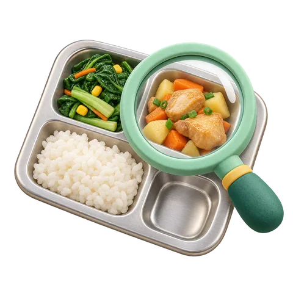

食光偵探
食光追查隊讓午餐剛剛好。吃得夠，也少一點浪費。
開啟食光偵探作品、操作流程、簡報與問卷，都在這裡。
🎯 秒殺金句：面積辨識 ＋ 官方食材基準重量 ＋ 教室電子秤校準，兼顧快速與準確！結合學校公告菜單與教育部校園食材登錄平臺官方基準重量（白飯滿格約 180g、主菜約 90g、青菜約 85g），視覺 AI 辨識各格剩餘面積比例換算克數，同時標示信心度並搭配電子秤校準。查看 P7 簡報證據 →
🎯 秒殺金句：同一位同學真實兩餐配對追蹤！AI 調整盛飯比例與進食順序，自然吃完且剛剛好飽。這是同一位同學（plate-06 與 plate-07）真實追蹤！第一餐先吃白飯太快飽導致青菜剩 80g、排骨剩 72g；第二餐採用 AI 推薦「白飯先盛 3/4 碗、趁熱先吃 3 口青菜配主菜」，自然只剩 14g 且剛剛好飽。查看 P8 簡報證據 →
🎯 秒殺金句：三層架構！從個人配餐、班級回收桶，擴展到全校 23 天實登菜色口味預測。三層架構：第一層幫個人調配份量；第二層統計全班各道菜平均剩食；第三層串接全校 23 天、147 道教育部食材登錄菜色與回饋，發現蒜炒、蛋炒、香酥魚排接受度逾 92%，能提前幫學校調整菜單預防剩食。查看 P9 簡報證據 →
🎯 秒殺金句：核心是「吃得剛好、健康零浪費」，絕不挨餓！保留添飯彈性並動態調整份量。核心原則是「吃得剛剛好飽、健康零浪費」！AI 策略保留「吃完還餓再去添飯或加菜」，且餐後會勾選飽足感（剛剛好／還想再吃／太撐），若還想再吃，下一餐自動調高建議份量。查看 P6 簡報證據 →
🎯 秒殺金句：過去只知廚餘總重，現在精準掌握哪道菜、哪種煮法被剩下，精準備餐！整合 40 天菜單、23 天實登熱量（707–905 大卡）與分格克數，能幫廚房精準掌握各班備餐量，並幫營養師把常剩蔬菜改成受歡迎的料理法。查看 P10 簡報證據 →
🎯 秒殺金句：全國國中小皆有食材登錄平臺可無縫對接！只用學號代號、不拍臉，本機儲存最安全。全台國中小皆串接教育部食材登錄平臺，匯入菜單即可跨校使用；餐盤紀錄保存在平板本機資料庫（IndexedDB），只用代號、不拍臉部，並支援 JSON 備份，兼顧隱私與推廣。查看 P4 簡報證據 →
🎯 秒殺金句：嚴格落實「資料來源透明化」！實測與模擬分開標示、絕不混淆。23 天教育部食材登錄平臺（638 筆進貨重量）與 17 張校內餐盤照片標示為「真實實測」；而 120 則跨 40 天菜單的配餐故事則標示為「設計情境模擬」，用來測試不同挑食狀況的 AI 應對策略！查看 P10 簡報證據 →
🎯 秒殺金句：推動「班級每週惜食榜」與「跨學期菜單 AI 預警系統」，讓惜食成為全校日常！短期可在各班平板架設「餐後 3 秒拍餐盤角」，每週自動產出菜色報表給營養師；中長期則串接跨學期季節菜單，由 AI 預警高剩食風險菜色並推薦改良法，從源頭達成校園零廚餘！查看 P9 簡報證據 →
🎯 秒殺金句：系統內建自動色溫與對比白平衡校正，且 AI 是依食材多邊形邊緣輪廓與紋理特徵判斷，而非單一顏色，陰影下依然精準！我們在前端選圖時先進行白平衡與對比度正規化，避免黃光或反光干擾；更重要的是，Google 多模態視覺模型辨識的是食材的邊緣特徵、表面紋理與相對格位配置（例如白飯的米粒顆粒感、排骨的炸粉質地），而非單純靠顏色判定。我們實測 17 張不同時段（陰天、晴天窗邊、教室室內燈）的餐盤照片，皆能穩定辨識！查看 P2 簡報證據 →
🎯 秒殺金句：完全符合「進食順序法（Vegetables & Protein First）」醫學實證，穩定血糖且延長飽足感，自然吃得健康零浪費！這完全符合現代臨床營養學的「膳食纖維與蛋白質優先（Vegetables & Protein First）」原則！若一開始空腹吃大量精緻白飯，血糖容易快速飆升又驟降，導致太快飽或下午昏昏欲睡；先吃青菜與蛋白質能延緩醣類吸收、穩定血糖曲線並延長健康飽足感。搭配「先盛 3/4 碗、還餓再添」，讓同學在不挨餓的前提下自然吃完、剩食減少 91%！查看 P8 簡報證據 →
🎯 秒殺金句：0 為破音上限，越接近 0 越吵、負越多越安靜，尖峰車陣與清晨陽台相差近 35 分貝！dBFS 以 0 dBFS 為麥克風破音上限，因此數值皆為負數，「越接近 0 聲音越大、負越多越安靜」！福林路尖峰車陣 -17.8 dBFS 很吵，住家清晨山景陽台 -52.6 dBFS 超安靜，相差近 35 分貝。查看 P5 簡報證據 →
🎯 秒殺金句：嚴格落實「同機、同時段、15 秒定點」四大變因控制，以相對分貝差值消除硬體誤差！我們制定「同機、同時段、15 秒定點採集」科學控制變因規範！系統會檢查是否為同一台裝置（deviceId）與完整 15 秒未破音樣本，確保路線 B 比路線 A 減弱逾 8 分貝是真實環境差異。查看 P7 簡報證據 →
🎯 秒殺金句：AI 算客觀頻譜，人耳感受舒適度！垃圾車與蟲鳴實證人機雙重驗證才能校正 AI 盲點。我們設計「人耳主觀感受 × AI 客觀聲學雙重驗證」！AI 快速算出頻譜與 521 類聲源機率，但只有人耳能感受聲音讓人緊張或舒服，兩者結合加上現場照片才是最完整的聲景證據。查看 P6 簡報證據 →
🎯 秒殺金句：把跨時段（07:30–21:00）與跨天候/施工前後的「照片＋15 秒原音」加上時間軸！在同一生活圈持續累積跨時段（07:30 通學、10:30 上課施工、16:30 放學垃圾車、21:00 夜晚至清晨）與跨月份的「照片＋原音」大數據，拉動地圖時間軸就能回溯施工前後與四季聲景演變。查看 P9 簡報證據 →
🎯 秒殺金句：不走大馬路車陣（-17.8 dBFS），改走退縮綠蔭河濱好路（-26.5 dBFS），降噪逾 8 分貝更安全！透過 50 個公開據點與 17 處實測原音比對，發現避開大馬路施工側（路線 A -17.8 dBFS）、改走退縮人行道與志成公園河濱（路線 B -26.5 dBFS），音量降低逾 8 分貝，走起來更安靜安全。查看 P10 簡報證據 →
🎯 秒殺金句：三大倫理原則：只錄 15 秒環境背景音、不錄私人對話、照片去識別化並本機優先儲存！遵守三大隱私原則：每段只錄 15 秒環境背景音不錄私人對話、音檔與照片優先存於平板本機並支援 JSON 備份、公開展示的 17 處樣本皆聚焦環境景觀並完成去識別化處理。查看 P4 簡報證據 →
🎯 秒殺金句：資料來源雙重標籤！政府公開據點為探索起點基底，17 處照片原音為學生親訪實證。50 個政府公開據點（公園、交通站點）與 400 則情境故事是探索起點；而 17 處附現場照片、15 秒真實原音檔與分貝數據的紀錄，是我們親自走訪士林採集的一手實測證據，獨立標示！查看 P8 簡報證據 →
🎯 秒殺金句：匯入開放據點並由師生接力錄製 15 秒原音，任何學校都能建立專屬的通學降噪地圖！未來結合交通安全宣導與四季自然課，讓同學接力在施工前後、梅雨季、蟬鳴季持續上傳 15 秒聲景紀錄；不僅能為學弟妹標出最安靜安全的通學好路，更能成為長期公民科學資料庫！查看 P10 簡報證據 →
🎯 秒殺金句：我們採行「背風採集防護」與「100Hz 以下超低頻頻譜濾波」，結合「人耳盲聽聆聽感受」雙重校正風切雜訊！我們制定了雙重抗風切規範：第一是在現場採集時，若遇陣風會使用防風罩或以身體背風阻擋直接氣流；第二是在 AI 聲學頻譜分析中，風切聲大多集中在 100Hz 以下的超低頻悶響，YAMNet 模型能將其與中高頻的鳥鳴（2000–5000Hz）或人聲（300–3000Hz）分離。最關鍵的是我們堅持「人耳盲聽聆聽感受」，由同學親耳確認是否有風切干擾，確保數據純淨！查看 P6 簡報證據 →
🎯 秒殺金句：全系統原生支援標準 GeoJSON、CSV 與 OpenStreetMap 格式，能無縫對接台北市「通學巷安全改善計畫」！我們的系統具備高度開放與相容性！第一，所有 50 個據點與 17 處實測照片原音皆能一鍵匯出標準 GeoJSON、CSV 與音訊壓縮包；第二，我們標註的「通學路段 A/B 分貝對比（-17.8 vs. -26.5 dBFS）」與人行道退縮綠蔭點位，能直接提供給台北市交通局與教育局作為「安心通學巷」標線人行道鋪設、綠化降噪植栽規劃的第一手市民科學實測依據！查看 P10 簡報證據 →